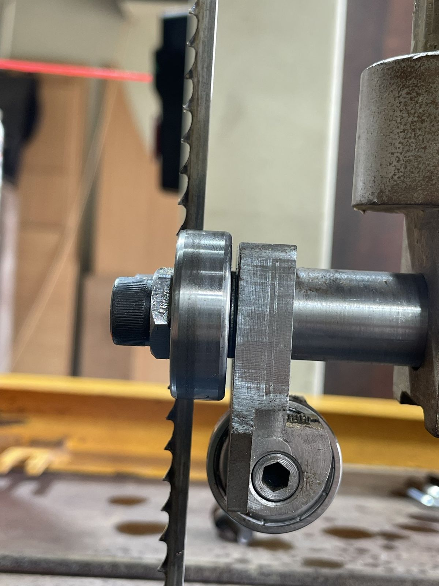

Serra de fita: rodas, tensão e alinhamento de uma Harvey HW616
Manutenção completa da serra de fita da oficina: pneus, coplanaridade das rodas, tensão, alinhamento, guias de rolamento, escolha da lâmina e um calendário de cuidados.
A serra de fita da oficina é uma Harvey HW616, de 16 polegadas, com uns vinte anos de uso. O manual original da HW614 e HW616 está no acervo: Manual da serra de fita Harvey HW-616. Este roteiro reúne a manutenção completa, da roda à lâmina. A sequência de regulagem do dia a dia está no artigo Regulagem da serra de fita.

1. Rodas e pneus
Retire a lâmina e limpe as rodas. Resina e serragem prensada nos pneus de borracha causam vibração e fazem a lâmina "andar".
- Limpe com escova macia e um pano levemente úmido. Não use solventes fortes nem óleo, que ressecam a borracha e tiram a aderência.
- Procure rachaduras, partes achatadas ou pedaços faltando. Pneu danificado se troca; os de poliuretano são os mais comuns hoje.
- Gire cada roda e escute: ruído ou folga ao balançar a roda indica rolamento do eixo gasto.
2. Coplanaridade das rodas
As duas rodas precisam estar no mesmo plano. Com a lâmina montada e tensionada, encoste uma régua longa e reta nos aros das duas rodas. Ela deve tocar quatro pontos: em cima e embaixo de cada roda.
Se houver vão, uma das rodas precisa ser deslocada no eixo, normalmente com arruelas de calço, conforme o manual. Leve em conta que a inclinação da roda superior, usada para o alinhamento da lâmina, também altera o teste: faça a conferência com a roda superior sem inclinação exagerada.
3. Tensão
- O manual manda começar com a escala de tensão entre 4 e 6 e ajustar pelo teste de vibração descrito abaixo. A escala das máquinas costuma ser imprecisa; um teste prático é empurrar a lâmina de lado com o dedo e ela deflexionar uns 6 mm, com a guia superior a cerca de 15 cm da mesa.
- Outro teste comum: com a máquina ligada, alivie a tensão aos poucos até a lâmina começar a vibrar, e depois aperte de novo um pouco além desse ponto.
- Ao fim do dia, alivie a tensão. A mola e os pneus duram mais, e as rodas não ficam marcadas.
4. Alinhamento da lâmina
Gire a roda superior à mão e ajuste sua inclinação até o vão dos dentes correr centrado no ponto mais alto da coroa. Trave o ajuste e gire várias voltas para confirmar que a lâmina não se desloca.
5. Guias de rolamento
A HW616 usa guias de rolamento: dois laterais e um de encosto atrás da lâmina, em cima e embaixo da mesa.


- Gire cada rolamento com o dedo. Se arranhar, travar ou tiver folga, troque; são rolamentos comuns, encontrados pelo número gravado na lateral.
- Laterais quase encostando na lâmina (uma folha de papel), sempre atrás do vão dos dentes. Encosto também a uma folha de papel atrás da lâmina.
- Confira o inserto da mesa, a peça em volta da lâmina. Se estiver lascado, troque ou faça um novo de madeira ou fenolite: peças pequenas podem cair pela abertura.
6. Escolha da lâmina
Lâmina estreita faz curvas fechadas; lâmina larga corta reto e desdobra melhor. Os raios abaixo são aproximados e variam com a marca e a trava dos dentes.
| Espessura da peça | Dentes por polegada (TPI) | Uso |
|---|---|---|
| até 25 mm | 10 a 14 | Recortes e curvas finas |
| 25 a 75 mm | 6 | Uso geral |
| acima de 75 mm | 3 a 4 | Desdobro de tábuas e toras |
Regra prática: pelo menos três dentes devem estar dentro da madeira ao mesmo tempo. Pelo manual, a serra usa lâmina de 132 polegadas (cerca de 3.353 mm), com largura de 1/16" a 1". Confira na placa da sua máquina, principalmente se for outro modelo.
Calendário de manutenção
| Quando | O quê |
|---|---|
| A cada uso | Aliviar a tensão ao terminar; conferir e limpar a escova da roda inferior |
| Mensal | Limpar os pneus; conferir rolamentos das guias |
| A cada troca de lâmina | Alinhamento, guias e esquadro da mesa |
| Anual | Coplanaridade, rolamentos dos eixos e estado dos pneus |